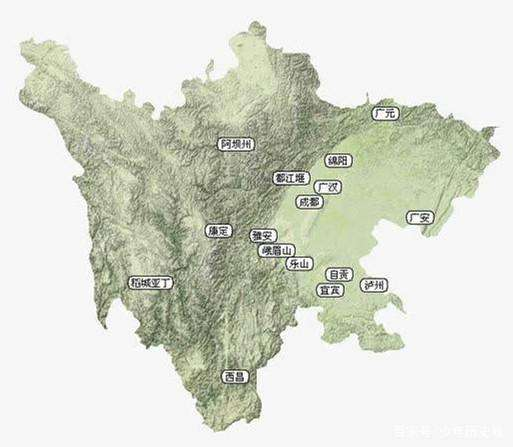
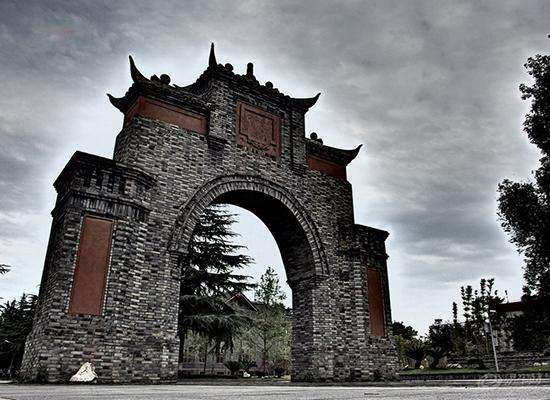
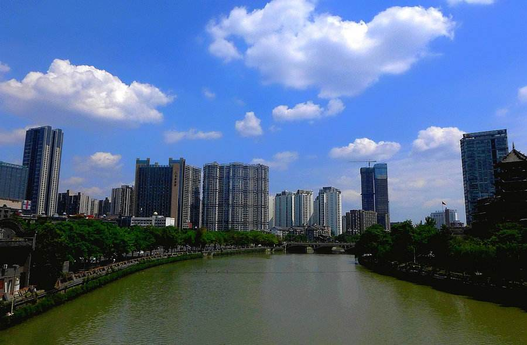

-
Topography of Chengdu By Baidu,Link
成都平原（Chengdu Plain），又名川西平原、盆西平原，四川话称之为“川西坝子”，是位于中国四川盆地西部的一处冲积平原，包括四川省成都市各区县及德阳、绵阳、雅安、乐山、眉山等地的部分区域，总面积1.881万平方公里 ，是中国西南三省最大的平原。 成都平原发育在东北—西南向的向斜构造基础上，由发源于川西北高原的岷江、沱江及其支流等8个冲积扇重叠联缀而成复合的冲积扇平原。整个平原地表松散，沉积物巨厚，地势平坦，平均坡度仅3%～10%，地表相对高差在20米以下。 成都平原四周有群山环抱，基底由白垩纪和下第三纪碎屑岩（红层）组成，平原主体物质由第四系松散堆积物组成。平原内四季分明，日照少、气候温和，降雨充沛，属暖湿亚热带太平洋东南季风气候区；其水系格局特殊，呈纺锤形，河流出山口后分成许多支流奔向平原，分枝交错，河渠纵横。 成都平原地势自西北向东南倾斜，一般海拔600米左右，土壤肥沃。又有自古闻名的都江堰灌溉工程，水渠纵横，农业发达，物产富饶，人口稠密，是中国重要的水稻、甘蔗、蚕丝、油菜籽产区，自古有 “天府之国” 的美誉。
-
History of Chengdu By Baidu,Link
成都自古为西南重镇，三国时为蜀汉国都，五代十国时为前蜀、后蜀都城，文化遗存丰富，1982年被国务院公布为国家历史文化名城。成都有2300多年建城史。秦汉以来，成都就以农业、手工业兴盛和文化发达著称，历代都是中国西南地区的政治、经济、文化中心和长江流域的重要城市。汉代成都与洛阳等并列为五大都会之一。唐代商贸繁荣，与扬州齐名，称为"扬一益(成都)二"。宋代成都印刷的"交子"是世界上最早使用的纸币。南方丝绸之路的起点城市就是成都。杜甫的著名诗句"窗含西岭千秋雪，门泊东吴万里船"，生动地描绘了成都当时作为长江上游重镇和西南经济文化中心商贾如云、车水马龙的繁荣景象。
-
Biological resources in Chengdu By Baidu,Link
成都生物资源丰富，珍稀植物有银杏、珙桐等。珍稀动物有大熊猫、小熊猫、金丝猴等。中药材有860多种，川芎、川郁金、乌梅、黄莲等蜚声中外。成都市旅游资源丰富，名胜古迹中外驰名。全市现有人文景观172处，其中尤以武侯祠、杜甫草堂、王建墓、都江堰、二王庙、青城山最具特色。 有全国重点文物保护单位和四川省文物保护单位19处。有世界唯一的大熊猫繁育研究基地。地处由剑门蜀道、九寨沟、峨嵋山、长江三峡等地组成的四川旅游环和全国旅游环的联络点上，还是内地前往西藏的主要通道，旅游地理位置十分优越。 憨态可掬的大熊猫不仅是中国的国宝，还被视为和平与友谊的象征而成了世界人民的共同财富。1961年，当世界野生生物基金会成立之际，各国代表一致推选以大熊猫形象作为这个国际组织的会徽 、会旗。大熊猫是中国的特产，主要分布在川、陕、甘三省，目前的野生大熊猫总数不足1000只，其中80%以上分布在四川境内，成都市郊的都江堰、崇州、大邑、彭州都有少量大熊猫出没。为了强化大熊猫的野外保护，成都分别在都江堰市建有国家级自然保护区龙溪～虹口自然保护区，崇州市建有省级鞍子河大熊猫自然保护区，大邑县建有省级黑水河大熊猫自然保护区。
-
Climate By Baidu,Link
成都是一个非常有特征的个性化城市。首先表现在气候上。成都气候的一个显著特点是多云雾，日照时间短。民间谚语中的“蜀犬吠日”正是这一气候特征的形象描述。成都气候的另一个显著特点是空气潮湿，因此，夏天虽然气温不高，却显得闷热；冬天气温平均都在5度以上，但由于阴天多，空气潮，却显得很阴冷。其二，成都是古蜀国文化的重要发源地，创办了中国历史上第一所宫办学堂——石室学堂。在唐宋经济发达、文化繁荣时期，著名诗人李白、杜甫、李商隐等流寓成都，创作了大量吟诵成都风物的诗词歌赋，并留下众多文化遗迹。 .... 宜人的气候，深远的历史，富饶的物产，使成都成为一个宁静、悠闲、充满情趣的旅游之地。作为我国历史文化名城之一，成都有着丰富的旅游资源。1500多年前的晋代诗人左思曾由衷地称它是“既崇且丽”。不论是“诗仙”李白，还是“诗圣”杜甫都曾无限深情地讴歌过这座风姿独具的城市。的确，成都是一座既宁静又繁荣，既有深厚的文化积淀，又有优美自然环境的城市。